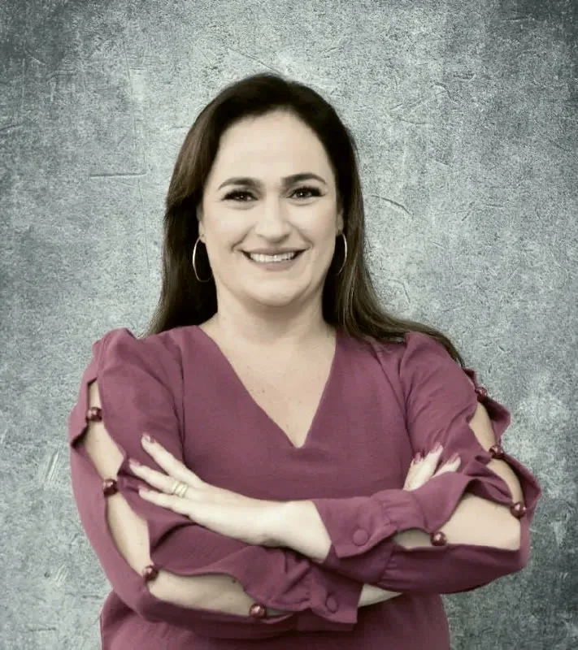

O plano de saúde limitou ou negou a terapia
Com a prescrição médica, é possível pedir na Justiça a cobertura das terapias, inclusive o método ABA, com pedido de liminar para o tratamento começar enquanto o processo corre.
Aposentadoria, BPC/LOAS, benefícios por incapacidade e os direitos da pessoa com autismo.
Dra. Daniela M. Rosseto de Oliveira
OAB/SP 277.178. Atendimento presencial e por vídeo.
Para o INSS, a sua vida de trabalho é uma lista de meses. Um mês que falta pode mudar o resultado do pedido. Por isso o atendimento começa pelo extrato: conferimos cada período, juntamos o que comprova e explicamos o caminho antes de qualquer passo.
Escritório fundado pela Dra. Daniela Rosseto, que atua no Direito Previdenciário há mais de 15 anos.
Benefícios do INSS e assistenciais, no pedido administrativo, no recurso e na Justiça.
Um salário mínimo por mês ao idoso com mais de 65 anos ou à pessoa com deficiência, mesmo sem ter contribuído.
Um salário mínimo por mês ao idoso com mais de 65 anos ou à pessoa com deficiência, mesmo sem ter contribuído.
Auxílio-doença e aposentadoria por invalidez, da perícia ao recurso.
Auxílio-doença e aposentadoria por invalidez, da perícia ao recurso.
Por idade urbana, por tempo de contribuição, rural, especial e da pessoa com deficiência, com as regras de transição da Reforma.
Por idade urbana, por tempo de contribuição, rural, especial e da pessoa com deficiência, com as regras de transição da Reforma.
Quando a sequela de um acidente reduz a capacidade para o trabalho.
Quando a sequela de um acidente reduz a capacidade para o trabalho.
Benefícios dos dependentes do segurado.
Benefícios dos dependentes do segurado.
Para a segurada gestante ou adotante.
Para a segurada gestante ou adotante.
Orientação antes de pedir: qual benefício, qual regra e qual é o melhor momento para você.
Orientação antes de pedir: qual benefício, qual regra e qual é o melhor momento para você.
O escritório também atua em Direito Trabalhista e Direito Civil.
A lei garante direitos à pessoa com Transtorno do Espectro Autista e à família. Na prática, muitos dependem de um pedido bem feito ao plano de saúde, à escola ou ao INSS.
Com a prescrição médica, é possível pedir na Justiça a cobertura das terapias, inclusive o método ABA, com pedido de liminar para o tratamento começar enquanto o processo corre.
As redes de ensino têm o dever de oferecer o auxiliar qualificado em sala, individual ou compartilhado, conforme a necessidade de cada aluno.
O benefício assistencial também alcança a pessoa com TEA, conforme os requisitos de renda da família.

Atua no Direito Previdenciário há mais de 15 anos, com atenção especial aos direitos da pessoa com autismo. Atende quem teve o benefício negado ou cortado e quem quer se preparar antes de pedir.
O atendimento é feito por ela e pela equipe do escritório, em Rio Preto, em Bilac ou por videochamada, com informação clara sobre cada etapa do processo.
Pelo WhatsApp, por vídeo ou no escritório. Você conta a sua situação e tira as primeiras dúvidas, sem pressa.
Reunimos o extrato do CNIS, as carteiras de trabalho, os laudos e a carta do INSS. É aqui que se acha o período esquecido.
Com a análise pronta, você decide o caminho: pedido administrativo, recurso ou ação na Justiça.
O escritório acompanha cada andamento e avisa você do que acontece, até a decisão final.
Não precisa ter tudo. Traga o que tiver em mãos; o resto a gente ajuda a conseguir.
Av. das Hortências, 459
Jardim dos Seixas, São José do Rio Preto, SP
De segunda a sexta, das 9h às 18h.
Atendimento por vídeo com horário marcado.
Sim. O atendimento pode ser por videochamada (Zoom, Google Meet) ou por telefone, e os documentos podem ser enviados pelo WhatsApp.
Ainda dá para recorrer na via administrativa ou entrar com ação na Justiça. O primeiro passo é ler a carta de indeferimento e o extrato do CNIS para entender o motivo da negativa.
Pode ter. O BPC/LOAS é assistencial e não exige contribuição: é para o idoso com mais de 65 anos ou a pessoa com deficiência, conforme a renda da família.
A incapacidade é avaliada na perícia médica do INSS. Laudos, exames e relatórios atualizados ajudam a mostrar a sua condição; o escritório orienta o que levar.
Depende do tempo desde a última contribuição. Por um período, a pessoa mantém a qualidade de segurada mesmo sem contribuir. Cada caso precisa ser conferido no extrato.
Quando há prescrição médica, a limitação de horas ou a falta de profissionais capacitados na rede pode ser questionada, inclusive na Justiça, com pedido de liminar.
Mande uma mensagem pelo WhatsApp ou ligue para o escritório, de segunda a sexta, das 9h às 18h.